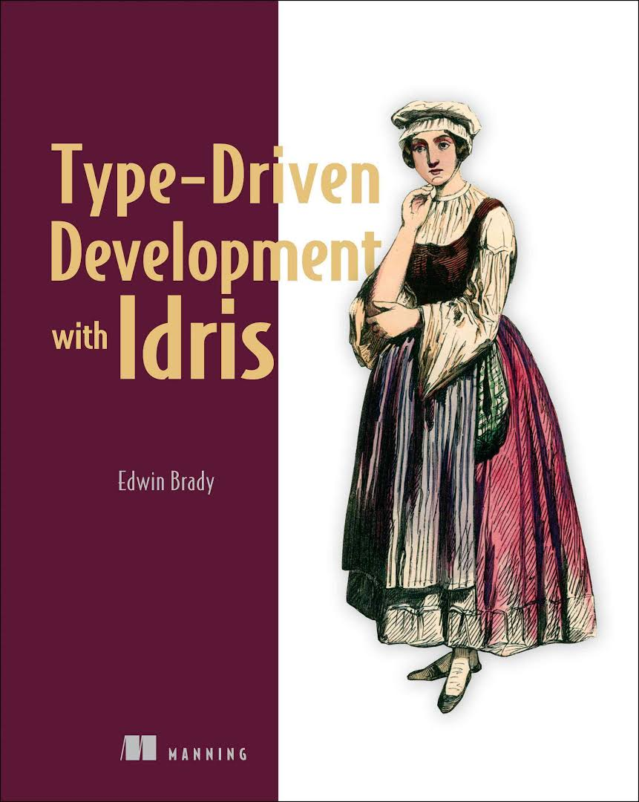
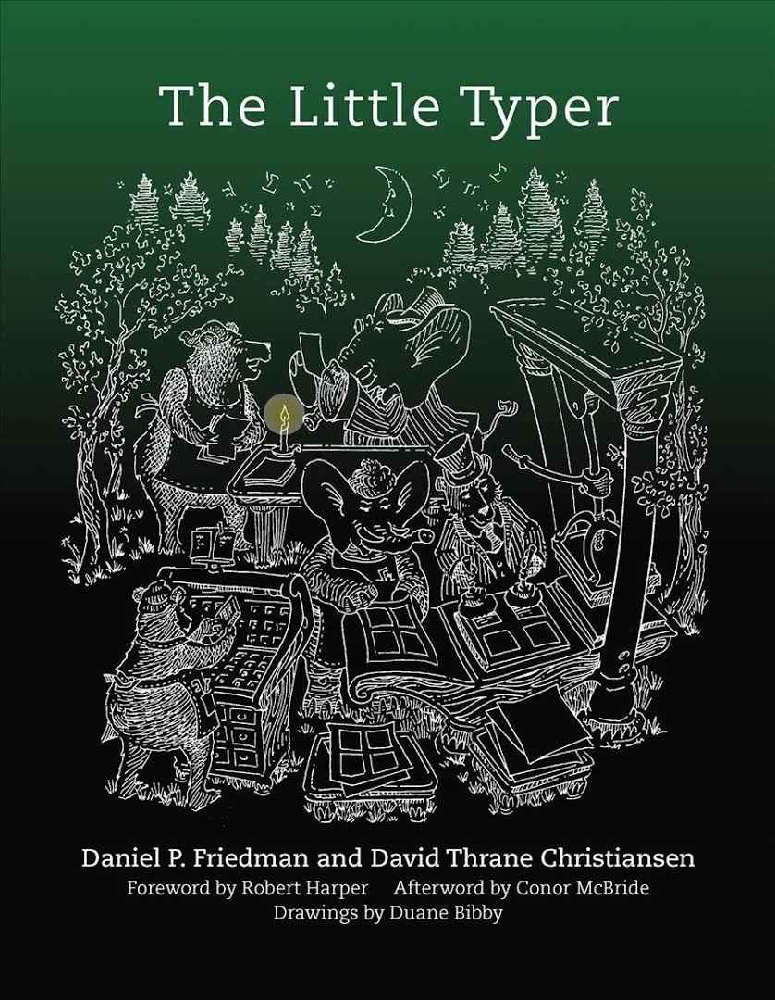

Created: 2018-11-22 Thu 10:56
Basic function
f : String
f = "Testing"
Takes a parameter
hello : String -> String
hello n = "Hello " ++ n
Analogous to higher order functions
import Data.Vect
-- `minus` is saturating subtraction, so this works like we want it to
eq_max : (n, k : Nat) -> maximum k n = plus (n `minus` k) k
eq_max n Z = rewrite minusZeroRight n in
rewrite plusZeroRightNeutral n in Refl
eq_max Z (S _) = Refl
eq_max (S n) (S k) = rewrite sym $ plusSuccRightSucc (n `minus` k) k in
rewrite eq_max n k in Refl
-- The type here says "the result is" padded to (maximum k n), and is padding plus the original
leftPad : (x : a) -> (n : Nat) -> (xs : Vect k a)
-> (ys : Vect (maximum k n) a ** m : Nat ** ys = replicate m x ++ xs)
leftPad {k} x n xs = rewrite eq_max n k in
(replicate (n `minus` k) x ++ xs ** n `minus` k ** Refl)
Code from https://github.com/hwayne/lets-prove-leftpad/blob/master/idris/Leftpad.idr

